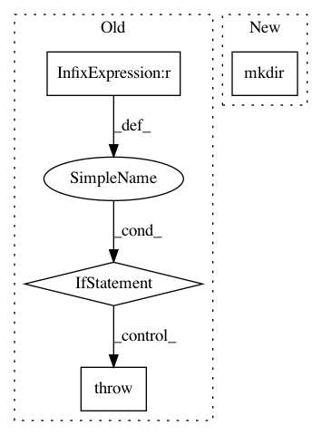

52136a7dda72978004f6af8e90e9ebe7596c27b8,examples/misc/image_thumbnail_sgskip.py,,,#,20
Before Change
import matplotlib.image as image
if len(sys.argv) != 2:
print("Usage: python %s IMAGEDIR" % __file__)
raise SystemExit
indir = sys.argv[1]
if not os.path.isdir(indir):
print("Could not find input directory "%s"" % indir)
raise SystemExit
outdir = "thumbs"
if not os.path.exists(outdir):
os.makedirs(outdir)
After Change
sys.exit(f"Could not find input directory {args.imagedir}")
outdir = Path("thumbs")
outdir.mkdir(parents=True, exist_ok=True)
for path in args.imagedir.glob("*.png"):
outpath = outdir / path.name
fig = image.thumbnail(path, outpath, scale=0.15)
In pattern: SUPERPATTERN
Frequency: 3
Non-data size: 4
Instances
Project Name: matplotlib/matplotlib
Commit Name: 52136a7dda72978004f6af8e90e9ebe7596c27b8
Time: 2019-11-26
Author: anntzer.lee@gmail.com
File Name: examples/misc/image_thumbnail_sgskip.py
Class Name:
Method Name:
Project Name: PavlosMelissinos/enet-keras
Commit Name: 28e7817f3ec42a59054a772f80a5782812a02448
Time: 2019-12-17
Author: PavlosMelissinos@users.noreply.github.com
File Name: src/data/utils.py
Class Name:
Method Name: ensure_dir
Project Name: dmlc/gluon-nlp
Commit Name: 29c957249fbdd4d5f7f517772835b7dc31a85e94
Time: 2020-01-15
Author: linhaibin.eric@gmail.com
File Name: src/gluonnlp/data/utils.py
Class Name:
Method Name: _load_pretrained_vocab